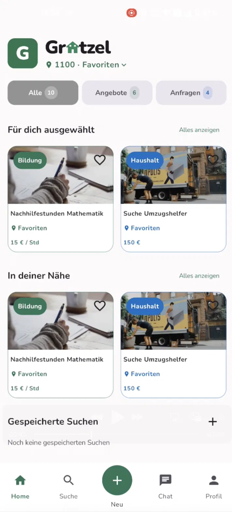
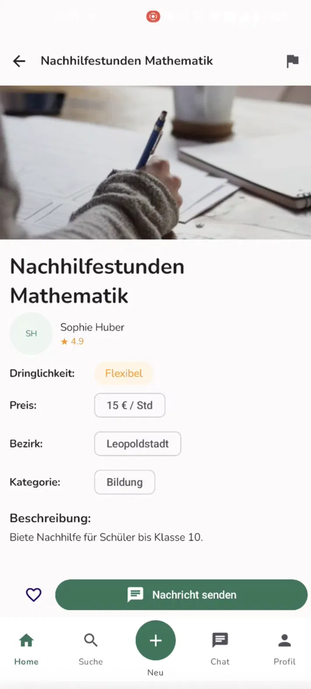
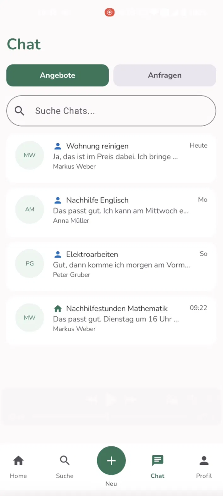
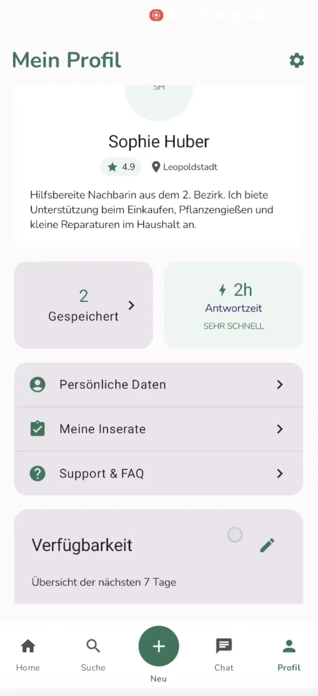
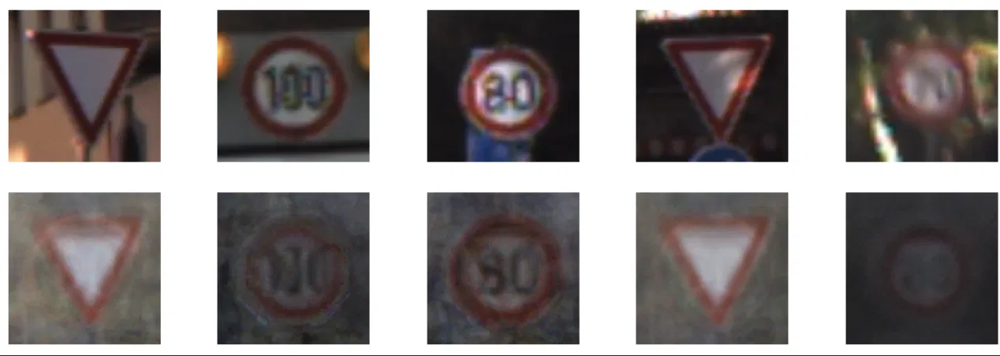
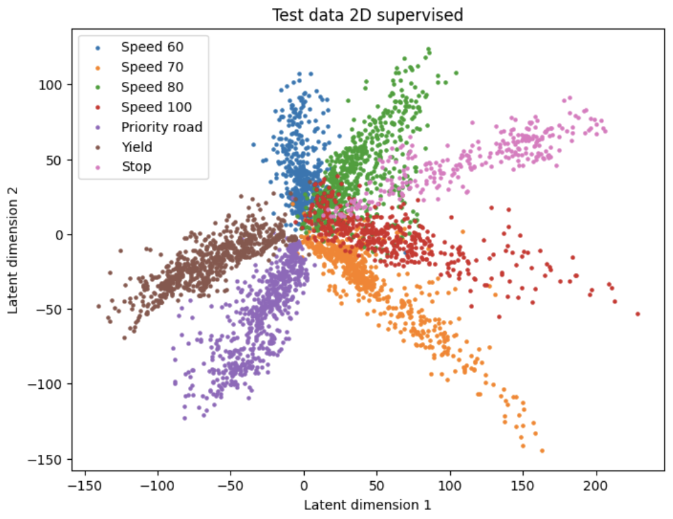
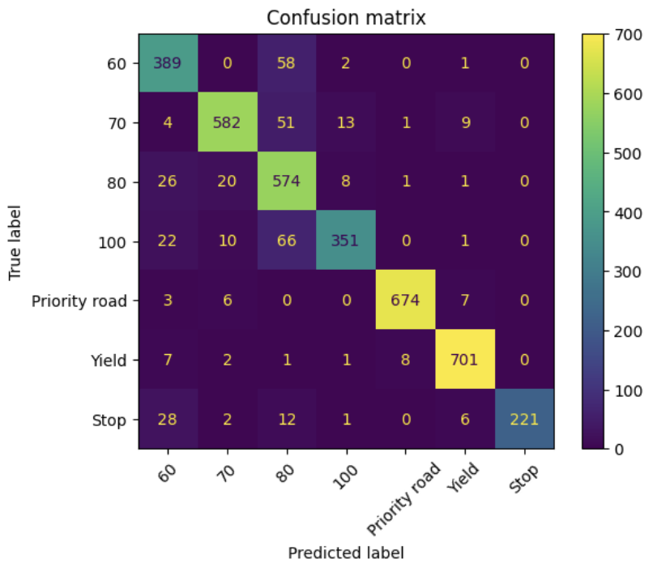
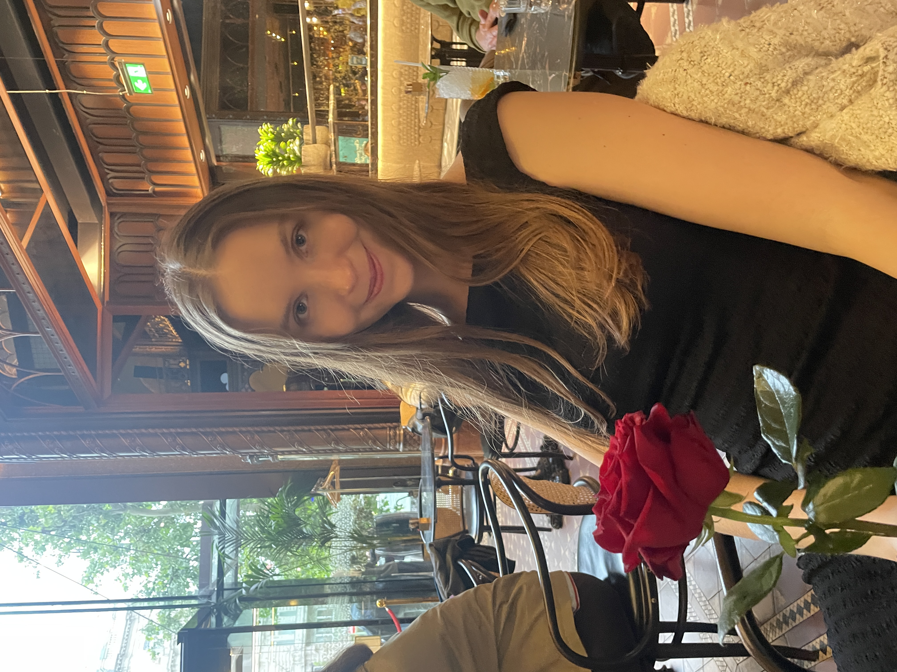

Computer Science student at the University of Vienna. Building apps, algorithms, and things that matter.
I'm a Budapest-born Computer Science student at the University of Vienna, currently looking for new opportunities in the city. I have a strong foundation in software engineering, data analysis, and mobile development — and I love building things that are both technically solid and genuinely useful to people.
Detail-oriented and motivated, I thrive in collaborative environments and I'm always pushing to expand my skills. When I'm not coding, you'll find me solving math problems or exploring Vienna.
BSc Computer Science
↓Mathematics & Physics · Budapest
↓Neighborhood Marketplace App · Android
Led the development of Grätzel — a full-featured Android marketplace connecting neighbors to offer and find local services, from tutoring to household help. I designed and built the core architecture, the personalized home feed with location-based listings, real-time chat, user profiles, and the full listing creation flow. Built with Kotlin and Jetpack Compose following Material 3 design principles.




Two-Player Treasure Hunt · Java
Built a fully autonomous Java game client for a two-player treasure hunt game. The client handles REST-based server communication, procedural half-map generation with flood-fill validation, and AI-driven pathfinding using Dijkstra's algorithm and BFS to navigate a shared game map within a strict 160-move limit.
Art Institute of Chicago · Android
Built a native Android app to browse and explore the permanent collection of the Art Institute of Chicago via their public REST API. Features a three-screen architecture with real-time filters by artist, medium and date range, async image loading, double-tap zoom on artwork images, and state management through a shared ViewModel using Kotlin StateFlow.
Supervised Learning · Data Analysis · Python
Analyzed German traffic sign image data (GTSRB dataset) using a range of machine learning models — from a simple linear classifier to CNNs, autoencoders, and supervised encoders. The goal was to compare classification accuracy and explore how different model architectures form internal representations of visual data.

Sample images from the GTSRB dataset — 7 traffic sign classes including speed limits (60, 70, 80, 100 km/h), yield, priority road, and stop signs. The dataset contains significant variation in lighting, angle, blur, and image quality, making classification a non-trivial task.

Visualization of the supervised encoder's 2D latent space on the test set. Each color represents a traffic sign class — the model learned to clearly separate all seven classes in just two dimensions, revealing strong discriminative structure in the learned representations.

Confusion matrix of the CNN classifier evaluated on the held-out test set. The bright diagonal confirms high accuracy across most classes. The main confusion occurs between visually similar speed limit signs — particularly 60, 80, and 100 km/h — which share the same circular red border and differ only in their inner digits.
Download my full CV to see my experience, education, and skills in detail.

My biggest achievement